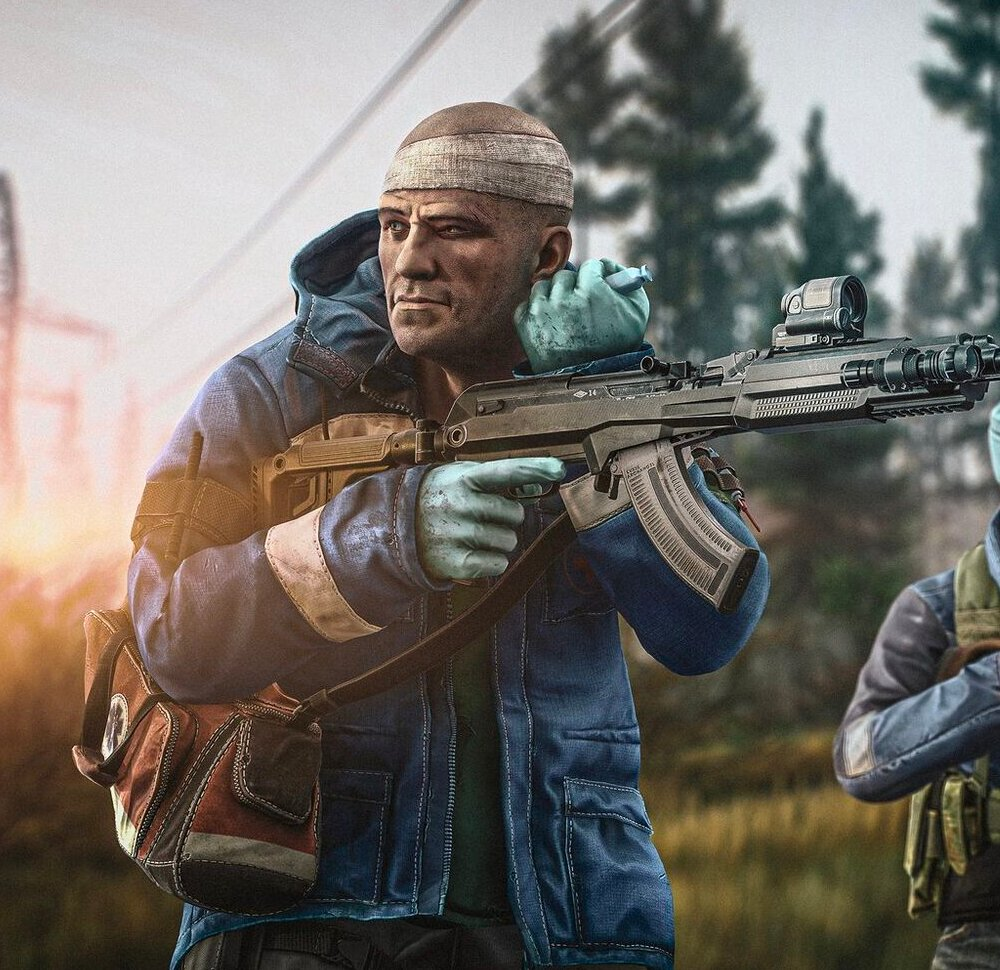
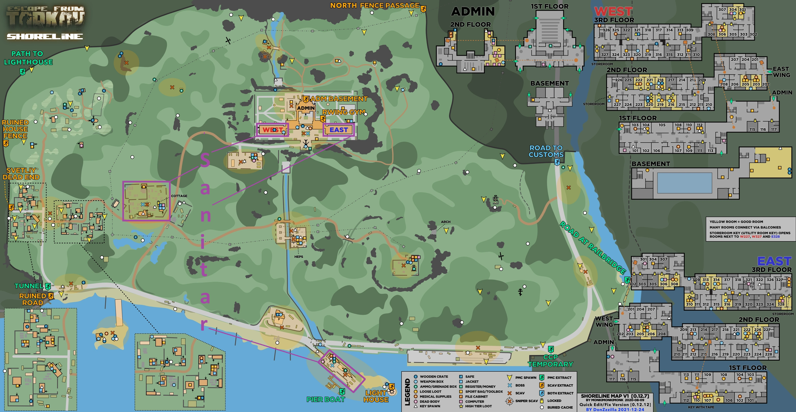

Sanitar Artwork
liteinfo
BlaBlaBlaBlaBlaBlaBlaBlba
BlaBLAblalbalblabalbalbla
Spawn Location
Sanitar can only spawn on the map "Shoreline" inside of the areas marked with purple on this map.
Drops And Info
WIKI WIKI WIKI WIKI BLA BLA BLA